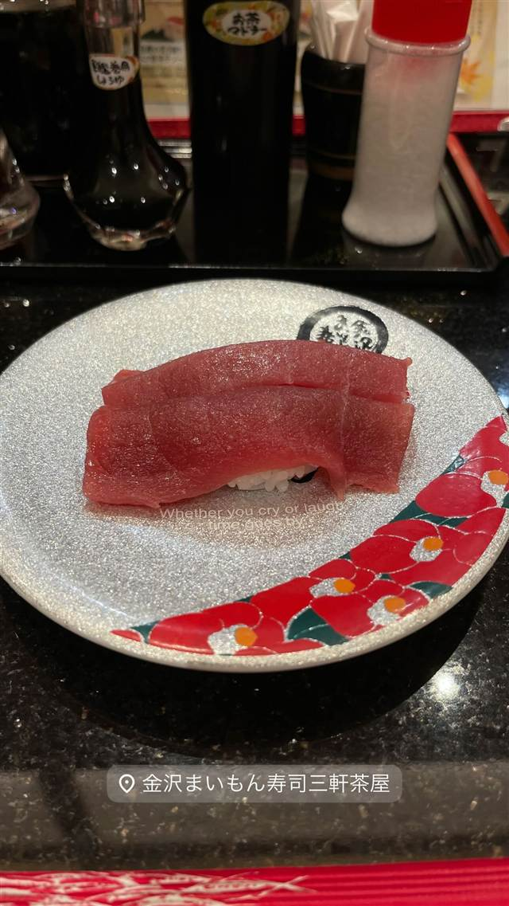

金沢まいもん寿司 三軒茶屋店
金沢弁で「うまいもの」の意、のどぐろや白えびなど北陸の鮮魚
金沢まいもん寿司三軒茶屋店
「金沢まいもん寿司」は、元一級建築士の木下孝治氏が異業種から回転寿司業界に飛び込み、2000年に金沢で本店を開いたのが始まり。店名の「まいもん」は金沢弁で『うまいもの』の意味で、のどぐろや白えびなど北陸の鮮魚を職人が丁寧に握ることで知られる。
TRIVIA
豆知識
- 店名の「まいもん」は金沢弁で『うまいもの』の意味
- がす海老など金沢地元でも入手困難な希少ネタを扱う
REVIEWS
世間の評判
3.24食べログ
北陸ネタの鮮度と長い待ち時間
- のどぐろなど北陸産の海鮮ネタは非常に鮮度が高いと評価する声が多い
- 予約なしだと1時間以上待つこともあり土日の混雑を指摘する声が多い
- チェーン店より値段は高めだが味の良さで納得できるという声もある
食べログ
| 創業 | 2000年4月、金沢駅西本店を開業（運営会社エムアンドケイは1999年設立） |
|---|---|
| 系譜 | 元一級建築士の木下孝治氏が異業種交流会で回転寿司用コンベヤーメーカーの社長と知り合ったのがきっかけで業界参入。1999年に金沢の「かねた寿司」を引き継ぎ、2000年に金沢駅西本店を開いた。 |
| 看板 | のどぐろ、白えび、がす海老など北陸の鮮魚の握り |
| こだわり | 地元金沢の新鮮なネタと米・調味料にこだわり、注文は全てカウンターの職人へ直接行う。 |
| どこから | 23区の外れ・近郊 |
| 行くなら | 行列 |
| 営業時間 | 月〜日 11:30-22:00 |
| 予算 | 夜 ¥3,000～¥3,999 |
| 場所 | 三軒茶屋 東京都世田谷区三軒茶屋1-37-2 三茶ビル2階 |
| メモ | 回転寿司激戦区・金沢でトップクラスの人気を誇るチェーン。三軒茶屋店は駅近ビル2階。 |
食べたもの：鮪の握り
NEARBY
近い店・同じ系統の店
-
 ★
醤油・中華そば 三軒茶屋駅
めん和正（わしょう）
看板のない行列店、永福町大勝軒系の煮干し中華そば
昼 ～¥999 夜 ～¥999
★
醤油・中華そば 三軒茶屋駅
めん和正（わしょう）
看板のない行列店、永福町大勝軒系の煮干し中華そば
昼 ～¥999 夜 ～¥999
-
 ★
醤油・中華そば 三軒茶屋
らーめん・わんたん ゆう輝屋
たんたん亭に連なる系譜の透き通った醤油ワンタン麺
昼 ¥1,000～¥1,999 夜 ¥1,000～¥1,999
★
醤油・中華そば 三軒茶屋
らーめん・わんたん ゆう輝屋
たんたん亭に連なる系譜の透き通った醤油ワンタン麺
昼 ¥1,000～¥1,999 夜 ¥1,000～¥1,999
-
 パスタ 三軒茶屋駅
トラットリア ピッツェリア ラルテ（Trattoria e Pizzeria L'ARTE）
ビブグルマン掲載、ピザ百名店4度選出のVPN認定ナポリピッツァ
昼 ¥3,000～¥3,999 夜 ¥8,000～¥9,999
パスタ 三軒茶屋駅
トラットリア ピッツェリア ラルテ（Trattoria e Pizzeria L'ARTE）
ビブグルマン掲載、ピザ百名店4度選出のVPN認定ナポリピッツァ
昼 ¥3,000～¥3,999 夜 ¥8,000～¥9,999
-
 天ぷら・天丼 三軒茶屋
てんぷら横丁 わばる 三軒茶屋店
薄衣でサクサクの江戸前串天ぷらを塩やソースで味変
昼 ～¥999 夜 ¥2,000～¥2,999
天ぷら・天丼 三軒茶屋
てんぷら横丁 わばる 三軒茶屋店
薄衣でサクサクの江戸前串天ぷらを塩やソースで味変
昼 ～¥999 夜 ¥2,000～¥2,999
-
 お好み焼き・もんじゃ 三軒茶屋
緒駕多（おがた）
自由が丘で5年修行した店主の、京都仕込みの出汁とソース
昼 ¥1,000～¥1,999 夜 ¥2,000～¥2,999
お好み焼き・もんじゃ 三軒茶屋
緒駕多（おがた）
自由が丘で5年修行した店主の、京都仕込みの出汁とソース
昼 ¥1,000～¥1,999 夜 ¥2,000～¥2,999
-
 喫茶店 三軒茶屋
MOON FACTORY COFFEE
京都の名店の姉妹店で味わう北海道美幌豆のハンドドリップ
昼 ¥1,000～¥1,999 夜 ¥1,000～¥1,999
喫茶店 三軒茶屋
MOON FACTORY COFFEE
京都の名店の姉妹店で味わう北海道美幌豆のハンドドリップ
昼 ¥1,000～¥1,999 夜 ¥1,000～¥1,999
ONSEN & SAUNA